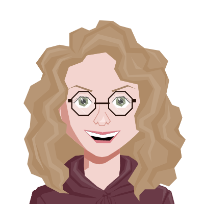

Programming | Writing | Video Production

Hi! I'm Annika, a developer, author, and video creator living in Germany.
I love anything that combines creative work and logic – and I love pizza. Welcome to my portfolio!
I work on a variety of coding projects, ranging from dealing with scientific problems to hobby apps and college projects.
You can check out my work and repositories on GitHub.
On my channel, I mainly cover computer science topics, breaking them down into easy-to-understand videos
to help students, developers and curious minds learn and grow.
Email: info@annika-schmidt.net